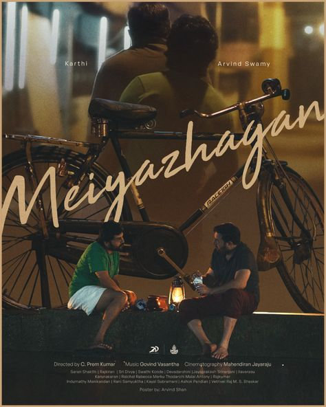

"Love is god, Love is fulfillment, Love is hidden, Love is ultimate truth"

emotional, slice-of-life drama
Release Date: September 27, 2024
Meiyazhagan (transl. The man with a beautiful soul)[a] is a 2024 Indian Tamil-language drama film[1] written and directed by C. Prem Kumar. It is produced by Jyothika and Suriya under 2D Entertainment. The film stars Karthi and Arvind Swamy in the lead roles alongside Rajkiran, Sri Divya, Devadarshini, Jayaprakash, Sriranjani, Ilavarasu, Karunakaran and Saran Shakthi.
The film was officially announced in February 2023 under the tentative title Karthi 27, as it is the actor's 27th film as a lead actor, and the official title was announced in the following May. Principal photography commenced in November 2023 and was predominantly shot in Chennai and Kodambakkam before wrapping by late-February 2024. The film has music composed by Govind Vasantha, cinematography handled by Mahendiran Jayaraju and editing by R. Govindraj.
Meiyazhagan released worldwide on 27 September 2024 to critical acclaim with praise for the lead performances (especially Karthi and Aravind Swamy), storyline, Govind Vasantha's background score, emotional scenes and Premkumar's screenplay and direction, with criticism for its runtime. A shorter version, which cuts 20 minutes from the film's theatrical version, was released on Netflix, receiving equal praise.
PLOT
In 1996, Arulmozhi Varman "Arul" bids farewell to his hometown, Thanjavur, after his ancestral house is partitioned amongst his relatives. Arul, his father Arivudai Nambi, a school teacher, his mother Valliyammal "Valli" and his older brother relocate to Madras with a heavy heart.
Twenty-two years later, Arul's younger cousin, Bhuvaneshwari "Bhuvana", invites him to her wedding. Unable to decline, he plans to attend the reception in Needamangalam, intending to depart immediately after the ceremony. He takes a train to Thanjavur and he visits his ancestral home, whose memories makes him nostalgic. Arul plans to purchase their rented residence in Chennai and shares the idea with his wife, Hema. During his bus journey to Needamangalam, Arul meets a bus conductor, Jagadeesan "Jaggu", a former student of his father, who drops Arul near the Needamangalam Railway gate, from where the marriage hall is nearby. At the venue, Arul reunites with his beloved maternal uncle Sudalamuthu, alias "Sokku Mama", who is overcome with emotion upon learning that his parents have not come. Arul becomes saddened by his cousin Latha's tale of her troubled marriage.
Arul meets an unfamiliar relative with a contagious, childlike smile and infectious enthusiasm who affectionately calls Arul "Athaan" (transl. 'Aunt's son/ Cousin' or 'elder sister's husband/ Brother-in-law'). Initially, Arul finds him bothersome, but the relative persists and speaks with Hema over the phone. Neither Arul nor Hema muster the courage to ask about his identity. Arul gifts Bhuvana, the bride, beautiful gold jewellery, and their heartfelt reunion touches everyone in the marriage hall. Bhuvana's groom, Giridharan, also acknowledges his affection for Arul. Despite Bhuvana's pleas, Arul clandestinely leaves the reception with the relative, intending to leave without attending the wedding. However, the relative delays Arul, making him miss his bus and convincing him to stay overnight; the relative invites Arul home.
Arul meets Nandhini, the relative's pregnant wife. After a shower, the men share beers. In the backyard, the relative proudly introduces Arul to his Kangeyam bull named Dhoni, a veteran of Jallikattu competitions. Seeing him affectionately refer to the bull as his "son", Arul is surprised (seeing the affection in his heart for everyone). Arul discovers his old bicycle left behind in Thanjavur twenty years ago at the mysterious relative's house. The cycle holds sentimental value, as the relative's father, Santhanam, used it to sell saris. It has also been their family's reliable mode of transportation, earning its place as a cherished "god" in their household. Arul is overjoyed to see his bicycle being meticulously maintained, and they both stroll to the Vennaaru dam. Nandhini's husband shares the news of his impending parenthood and plans to name their child Arulmozhi after his Athaan. This revelation further deepens Arul's emotional connection and guilt for not knowing his relative's name.
Upon returning home, Nandhini's husband requests Arul to forgive those who deceitfully grabbed his ancestral property. He asks Arul to finally address him by his name and bless his wife, unborn child and him before leaving the following morning. Arul, moved by his relative's selfless nature and overwhelmed with guilt for still not recognising him, slips away before dawn. En route to Thanjavur, he recollects Kovilvenni and makes an impromptu visit, and while sitting there peacefully, he reflects on his journey.
Arul shares with Hema his emotional encounter with the relative, expressing regret for not knowing his name despite the pure love and care shown. He struggles to purchase a house but receives help from his boss. Arul's daughter, Jhanvi, recognising her father's emotional connection during his trip, discovers the relative's phone number, makes a call, and hands the phone to Arul. Nandhini's husband offers the remaining ₹25 lakhs for Arul's house. Arul asks about his identity, and Nandhini's husband is heartbroken upon this realisation. He provides clues, leading Arul to recall the nickname "Potato", which he had affectionately given him during the summer vacation of 1994.
As memories flood back, Arul refrains from revealing his discovery over the phone but rushes to Needamangalam, stopping at the temple to request an offering through the flower vendor he had met earlier. Arul arrives at Potato's house and knocks on the door, but receives no response. Finally, Arul calls for "Meiyazhaga(n)", and the relative immediately opens the door, overwhelmed with happiness at Arul remembering his actual name.